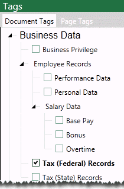
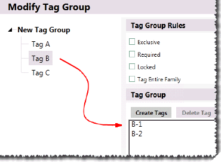

Note: Most cases use only document tags.
The tag palette includes groups of tags that are to be applied to each document and/or page in your case. To ensure proper and efficient review processes within your organization, Eclipse enables you to define and manage tag groups and tags for each case. This figure shows an excerpt of a typical tag palette.

The types of tags available in a case (document and/or page tags) is based on the tagging option selected when the case is created. (See Select Case Options.)
|
|
Note: Most cases use only document tags. |
Changes to tag groups and tags can be made after case review begins (except that tag groups/tags in use cannot be deleted). Users can refresh the tag palette in Eclipse if changes are made.

This page contains the following content:
Related pages:
As with many
Groups: Consider the groups you will need, naming conventions, and group rules. See the table in Create New Public Tag Groups and Tags for details on rules.
Tags: Give some thought to the tags to be included in each group and naming conventions.
Nested tags: Understand the behavior of nested tags so that tags will be organized as intended.
Also consider the information users will need in order to properly apply tags and create appropriate case instructions.
Nested tags include primary (parent) tags and one or more subordinate (child) tags, as in the following example. Multiple levels of tags can exist, creating a tree of related tags.

Only the most subordinate member(s) of a nested tag group can be applied, and when such a tag is applied, its parents are also applied. In the example above, if the Performance Data tag is applied, the Employee Records and Business Privilege tags are also applied.
To create tag groups and tags for a case:
Get Started
Log
in as an
Open the case for which tag groups/tags are being created.
On the Case View pane, click Case Administration and then Tag Palette as shown in this figure.

On the Case
Administration tab, click  .
.
Enter the tag group name (up to 100 characters), then click Create.
Select needed tag group rules:
Rule | If this rule is set, then... |
|
Exclusive |
Only one tag in the group can be applied to a document. |
|
Required |
At least one tag in the group must be applied to all documents in a batch before a batch can be marked complete. |
|
Locked |
Maintain the current state of tags in the group. That is, if a tag in the group has been applied to documents, it remains in this state. If a tag has not been applied to documents, it cannot be applied. |
|
Tag Entire Family (1) |
When a tag in the group is applied to a document, the tag will be applied to the selected document and its relatives (all generations of parents, children, siblings). |
(1) Document relationships are based on the use of a BEGATTACH field in the case. See Step 3: Define Database Fields for details on the BEGATTACH field type.
Create the group’s tags as follows:
Click Create Tags.
In the Tag Group area, enter group’s tags (up to 250 characters for each name). Enter one tag name per line as shown in the following figure and ensure each name is unique.

When all tags have been entered, click Add.
If nested tags are needed for a newly created tag, click that tag in the list and repeat steps a - c for the nested tags.

When all details for the new tag group are complete, click Save. The new tag group is now available to be added to a coding form for the case. Once added to a coding form, the tag group and tags will appear in the Document Tags and/or Page Tags tab, depending on the types of tags in your case.
Repeat these steps to create all needed tag groups/tags.